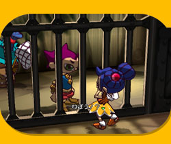
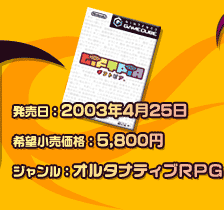
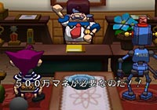
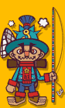
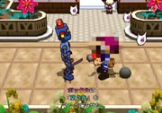
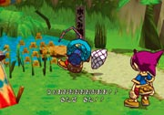
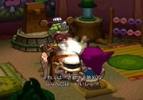

舞台はゆったりとした時が流れる「ナナシ島」。
主人公のポックルは、オトナになるための「オトナ式」に遅刻してしまいます。
ナナシ島の村長さんは再オトナ式にかかる費用５００万マネを貯めるよう、ポックルに厳しく言い渡します。
このままだとオトナになれずに、ずーっと子どものまま！
ポックルはオトナになるために、島の中で様々なことにチャレンジしていきます。


ジャンルは「
オルタナティブＲＰＧ
」。ＲＰＧといっても、戦闘も魔法使いも武器も登場しません。ポックルが成長する条件は、ライフであるハートが増えること。
島の中で、誰かのお手伝いをしたり、様々なことを体験すると、このハートがどんどん増えていきます。最後にポックルは、どんな形でオトナになるか。実はお金を貯めることだけが、オトナになる方法ではないんです。
今までのＲＰＧにはない、ちょっぴり不思議な「成長」のゲーム。それが『ギフトピア』です。
